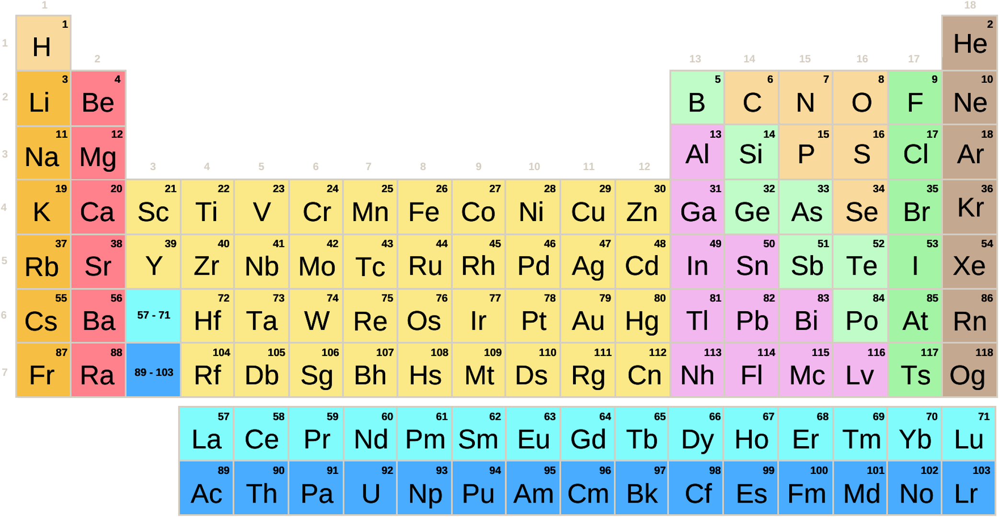
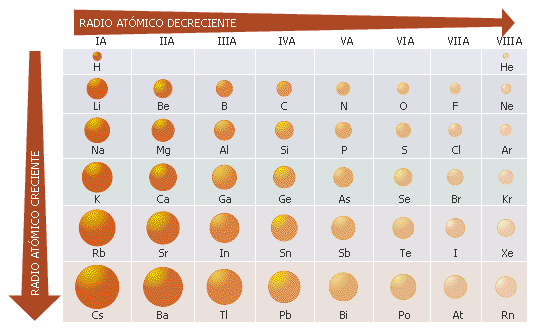
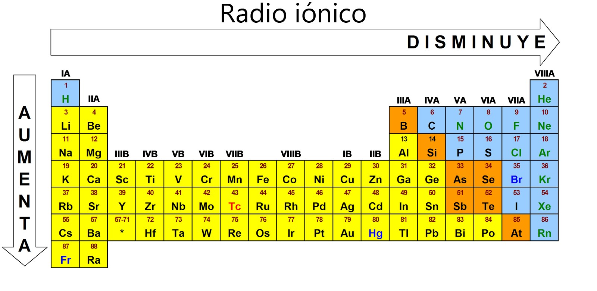

Propiedades periodicas
Propiedades periódicas de los elementos
La tabla periódica

La tabla periódica de los elementos es una disposición de los elementos químicos en forma de tabla, ordenados por su número atómico (número de protones), por su configuración de electrones y sus propiedades químicas. Este ordenamiento muestra tendencias periódicas, como elementos con comportamiento similar en la misma columna.
Las filas de la tabla se denominan períodos y las columnas grupos. Algunos grupos tienen nombres, así por ejemplo el grupo 17 es el de los halógenos y el grupo 18 el de los gases nobles. La tabla también se divide en cuatro bloques con algunas propiedades químicas similares. Debido a que las posiciones están ordenadas, se puede utilizar la tabla para obtener relaciones entre las propiedades de los elementos, o pronosticar propiedades de elementos nuevos todavía no descubiertos o sintetizados. La tabla periódica proporciona un marco útil para analizar el comportamiento químico y es ampliamente utilizada en química y otras ciencias.
Tamaño atómico
Antes de empezar deberias repasar:
- La estructura atómica
- Las configuraciones electrónicas
- La organización de la tabla periódica en grupos y periodos
Al final de la lección vas a saber:
- Predecir los tamaños de los átomos de manera cualitativa en función de su posición de la tabla periódica.
- Comparar el tamaño de distintos átomos.
- Utilizar el concepto de carga nuclear efectiva.
Introducción
H.G.J. Moseley (1887-1915) Introdujo el concepto de número atómico (Z) al que identificó con el número de cargas positivas del núcleo.Dedujo que las propiedades de los elementos dependían de Z. Murió a los 28 años en la batalla de Gallipolli (Turquía) . Lo más sorprendente de la tabla periódica tal vez fuera su capacidad para predecir, no solo la existencia de elementos aún no descubiertos (eka-boro, eka-silicio y eka-aluminio), sino de establecer con una precisión asombrosa la mayor parte de sus pro-piedades (ver tabla). También es importante el hecho de que Mendeleiev altere el orden establecido por el peso atómico para situar los elementos en el lugar que les corresponde de acuerdo con sus propiedades químicas, dando prioridad a estas frente a la masa atómica . Esto implica el reconocimiento (no explícito) de que la ley periódica no era tal, y que la periodicidad en las propiedades podría obedecer a otra causa aún desconocida.La tabla periódica actual data de 1944 e incorpora elementos desconocidos en la época de Mendeléiev (gases nobles, lantánidos y actínidos) y es atribuida a Seaborg (1912-1999).
- Ordena los elementos de acuerdo con su número atómico. Las propiedades de los elementos son función periódica de su número atómico, Z (Moseley, 1913). El número atómico coincide con el número de protones del núcleo y, para átomos neutros, con el de electrones de la corteza. Como el comportamiento químico de un átomo depende de la disposición de los electrones en la capa más externa (capa de valencia), todos los elementos de un grupo tienen propiedades químicas comunes al tener una con-figuración electrónica similar en su capa de valencia.
- La periodicidad en las propiedades químicas se debe, por tanto, a la repetición de las estructuras electrónicas de la capa de valencia.
¿Como deberia de estudiar esta lección?
- Debes leer la materia y asegurarte que la entiendes en general. Los conceptos mas importantes son los de número atómico, capa electrónica y carga nuclear efectiva.
- Pregunta todas las dudas que te hayan surgido.
- Realiza los ejemplos resueltos y comprueba si el resultado es el correcto. En caso de no serlo, trata de averiguarlo y en caso de no conseguirlo pregunta.
- Practica durante unos días un par de ejercicios.
El tamaño de un átomo viene condicionado por tres factores:
- El número de capas que posea. Los átomos que tengan más capas tendrán, lógicamente, un tamaño superior a aquellos otros que posean pocas capas.
- El número de electrones situado en la última capa o capa de valencia. La existencia de muchos electrones en la última capa hace que aumente el tamaño del átomo, ya que los electrones, al ser cargas negativas, se repelen y tienden a separarse unos de otros.
- La carga efectiva (Z*) del núcleo. Un electrón situado a determinada distancia del núcleo estará más fuertemente atraído por éste (tendiendo a situarse a menor distancia) si la carga nuclear efectiva es grande.
Si nos situamos en un grupo, los átomos tendrán mayor número de capas a medida que descendemos. Los elementos más pequeños estarán situados en la parte superior y los más voluminosos en la parte de abajo del sistema periódico.
En un periodo todos los elementos tienen igual número de capas (aunque los elementos de transición colo-can los electrones en el nivel “d” de la penúltima capa, este se encuentra muy cerca de la última).
En los periodos cortos a medida que vamos hacia la derecha, la carga nuclear efectiva aumenta con lo que se produce una disminución del tamaño de los átomos, ya que el efecto de repulsión entre los electrones no es grande.
En los periodos largos la tendencia es mucho más irregular.
En el cuarto periodo se sigue la tendencia de disminuir el tamaño de izquierda a derecha.
En los periodos quinto y sexto, y hasta la mitad del mismo, la tendencia es a disminuir el tamaño debido al aumento de carga nuclear efectiva. A partir de la mitad, y debido a la gran concentración de electrones, el efecto de repulsión se hace más importante, los electrones tienden a alejarse y el tamaño crece hasta el final del bloque “d”. Una vez iniciado el bloque “p” se produce una contracción de los átomos hasta presentar valores mínimos en los halógenos.
En resumen, en los periodos largos los átomos más pequeños se encuentran situados hacia la mitad periodo y al final del mismo

Radio iónico

Energía de ionización
Para estudiar la energía de ionización, visualiza el siguiente video.
Afinidad electrónica
Para estudiar la afinidad electrónica, visualiza el siguiente video.
Electronegatividad
Para estudiar la electronegatividad, visualiza el siguiente video.
Otros temas
Obra publicada con Licencia Creative Commons Reconocimiento Compartir igual 4.0